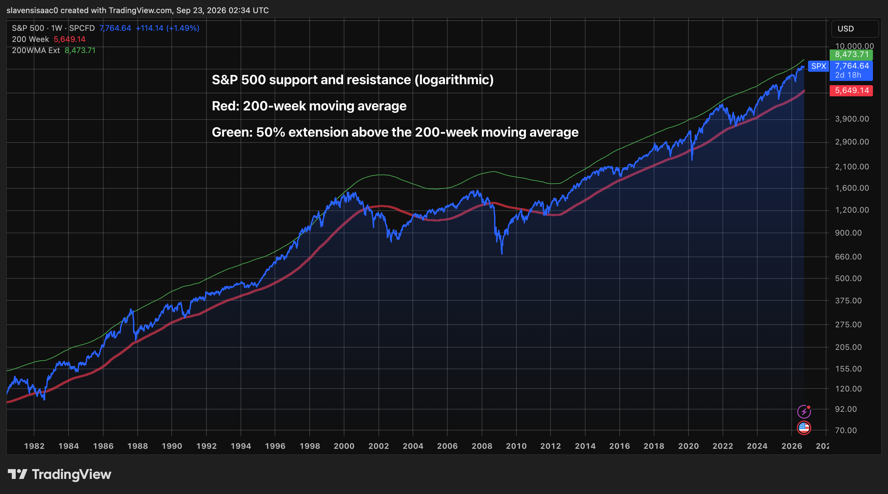
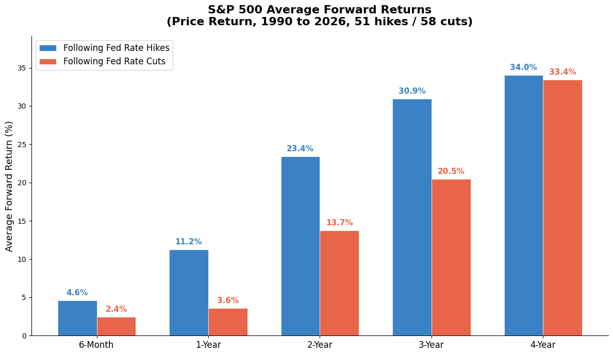
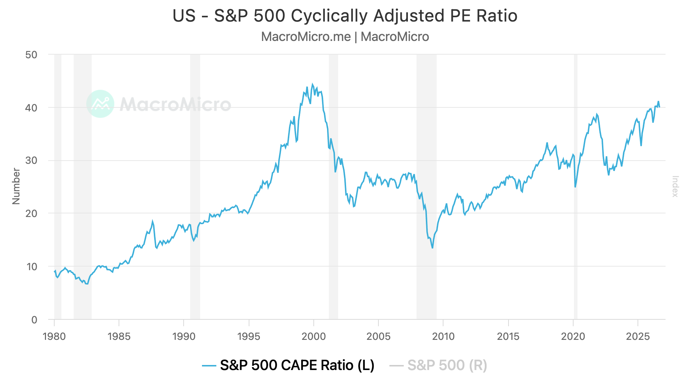
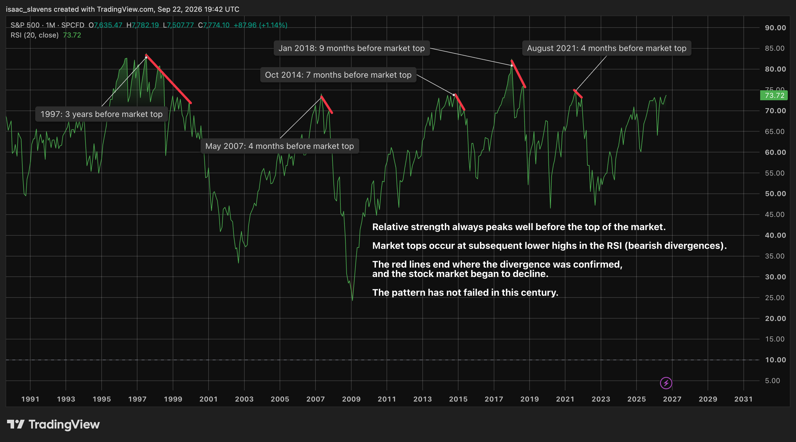

This market report assesses the stock market's current position in this bull market. My definition of an equity bull market begins as soon as it recovers from trading at its 200-week moving average, and reclaims the 20-week moving average (e.g. May of 2020, when lockdowns ended, or November of 2022, when ChatGPT was released). This report is only worth reading in full, because the final paragraph is where I address how my thesis could be incorrect.
For a couple years now there has always been one scary narrative or another dominating headlines as the market kept grinding higher -- driven primarily by an emerging technology with nearly limitless potential for productivity growth. It can be tempting to compare the current market to the dot-com bubble, but the reality is that they are not similar at all. The price of equity in the market can go up for two reasons: either to reflect the high likelihood-adjusted increase in future earnings of corporations, or to simply gamble on stocks in a euphoric environment, hoping a greater fool will opt to gamble subsequently. The former would be a calculated and sober repricing, and the latter would be the definition of a bubble. The market is unquestionably in highly valued territory, but during periods of economic and/or technological expansion, it has a tendency to remain there for a while, even absent genuine euphoria or a dot-com-like absence of fundamentals. It is not possible to predict the future, but it can be fun to try. All the data I've gotten my hands on supports the same base case, absent any black swan event (e.g. GFC, lockdowns, war outbreak). The data suggests that this current stock market rally has roughly 4-18 months to grind higher before cooling off, so that is what I will present the case for in this analysis.
Aside from the post-dot-com bubble "lost-decade", the S&P 500 has reliably traded between its 200-week moving average, and a 50% extension above it, for the last 50 years. When observing price action at this timeframe, those two bands become very useful and sobering indicators of how overvalued the market is. The image above would clearly imply that today is the late stage of a bull market, as the index approaches the green overvaluation line. The definition of both oversold and overbought, based on these technical indicators, has continually risen in nearly a straight line since 2008. The reason the May 2020-December 2021 bull market was so short-lived is because, thanks to a zero-rate environment, risk appetite sent the market up in a straight line. In contrast, with the tight monetary environment today, the current bull market has lasted almost three years now. This was largely aided by slower growth, in addition to dips along the way (e.g. April 2025 -20%, March 2026 -10%). Because growth is gradual and bumpy, it gives the fair-value price of the index time to rise, along with the ceiling price. If the reader is skeptical about the relevance of the 200-week moving average, perhaps dismissing it as arbitrary, I would hand the microphone to the legendary Charlie Munger, who claimed that "If all you ever did was buy high-quality stocks on the 200-week moving average, you would beat the S&P 500 by a large margin over time. The problem is, few human beings have that kind of discipline."1
The elephant in the room for the month of September took place on the 16th: the federal funds rate went up for the first time since the summer of 2023. Frightening as that may be, Warsh's bark is stronger than his bite. Even if more hikes are to follow, as hikes rarely appear in isolation, recent market history suggests that the early stages of a tightening cycle tend to be a positive indicator.

Data: FRED, Yahoo Finance. Rate hikes and cuts identified from changes in the federal funds target rate. Forward returns calculated as SPX price return from the first trading day on or after FOMC decisions over various time horizons. Values are the simple averages across all events per category. Returns represent price and do not include reinvested dividends. Analysis done in Python with Claude.
The start of a hiking cycle is a signal of economic strength, and it takes time for tight monetary conditions to translate to risk-off behaviour. Stocks tend to rise alongside the funds rate for a couple of years, so this rate hike was not a signal to flee from risk assets, but rather, should be interpreted as the seventh-inning stretch of this bull market.
Regarding valuations, the market is at its highest P/E level since the dot-com bubble. This does not mean it has only downside; it's important to digest that data properly.

The reality is that the P/E ratio of the S&P 500 will always rise over time, because it is a magnet for passive inflows. Now more than ever, the passive tailwinds are extremely significant. Namely, tax-advantaged Trump accounts2, and positive regulations from the SEC for tokenized stocks. Investors from all around the world will gain access to the American stock market in short order, as tokenized stocks are still in the early stages of going mainstream.3 Not only is an elevated P/E justified in the near-term, but this local high is very well in line with the long-term trendline since the 1980s, as the graph above demonstrates. The major outburst from the trendline is evidently the dot-com bubble, which should surprise nobody. The cyclically-adjusted P/E would suggest that the market is undoubtedly highly valued -- as it now trades above its liquidity-boom 2021 high, but it is not a bubble. Trading at the upper threshold of a 50-year trendline is quite justified given the current extent of innovation and potential from AI. If the reader is convinced that we are nearing the late stages of a healthy bull market, it is time to examine what a sell-signal may look like in the near future.
There have been five major stock market cycle highs in this century: 2000, 2007, 2015, 2018, and 2021. It may sound too good to be true, but all five of these peaks followed the exact same sell-indicator almost perfectly. The 20-month relative strength index, like the 200-week moving average, is a sober technical indicator that allows traders to assess price action, as opposed to following narratives. For each of the five cycle tops this century, the 20-month RSI was exactly correct -- indicating a bearish divergence (sell-signal) at the exact peak in the market, as the chart below demonstrates.

A bearish divergence in the relative strength index of any asset occurs when price makes a higher high, but momentum (relative strength) makes a lower high. In other words, because momentum slows down, it is a signal that buying power is running out, and weakness is around the corner. Each red line at the top of these peaks is the distance between the peak of the RSI, and its subsequent lower-high. The end of the red line coincides, in all of these cases, with the local peak of the S&P 500 index's valuation. The only exception to this pattern was the dot-com bubble (when it took three bearish divergences instead of one); it has been a recurring theme in this article that nothing about the dot-com bubble was normal. Currently, this indicator sits at a local high for this cycle. Assuming it holds up, that assures investors a bare minimum of four months until the peak of the market, which would be confirmed as soon as the RSI demonstrates diminished buying momentum with a lower high.
By now the reader is likely sick of hearing references to the 1997-2000 dot-com bubble throughout this report. That rally comes up so frequently for the same reason that in any discussion of stocks between 1930 and 2000, the crash of 1929 would have come up; sometimes the market is completely oblivious to how radically speculative it has become. I don’t see a reason to believe we are in another wholly speculative bubble, given how gradual and tempered the growth has been alongside reasonable valuations. That being said, it is not impossible that we are in the early stages of a much greater rally. AI could become more transformative than the internet, and in much shorter order. Moreover, the relative strength of the market today is similar to that of 1996, and the P/E ratio is similar to that of 1997-1998. An “AI bubble” is certainly possible, but the data does not suggest to me that any major bubble is here yet. My base prediction is a 4-18 month window until sellers take control, so I’m either wrong because the market sells off within the next four months, or it waits over a year and a half to do so. Let me assure the reader that I intend to look back on this article in a later report, and hold myself accountable as to how I interpreted the data above, and whether it led me in the right direction or not.